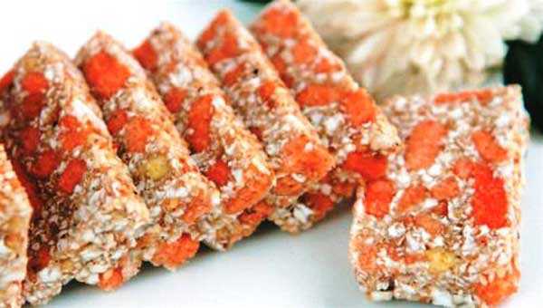

bánh cáy đặc sản đất Thái Bình là thức bánh dân giã được làm từ đôi bàn tay khéo léo của người dân làng Nguyễn, xã Nguyên Xá, huyện Đông Hưng. Loại bánh này ngoài Thái Bình không thấy nơi nào có. Xưa kia đây là sản vật của người dân Thái Bình dùng để tiến vua. Nét độc đáo của bánh cáy làng Nguyễn chính là sự kết hợp các nguyên liệu từ hoa màu trong đời sống, tạo nên một thứ bánh dẻo, thơm và có hương vị đặc trưng.